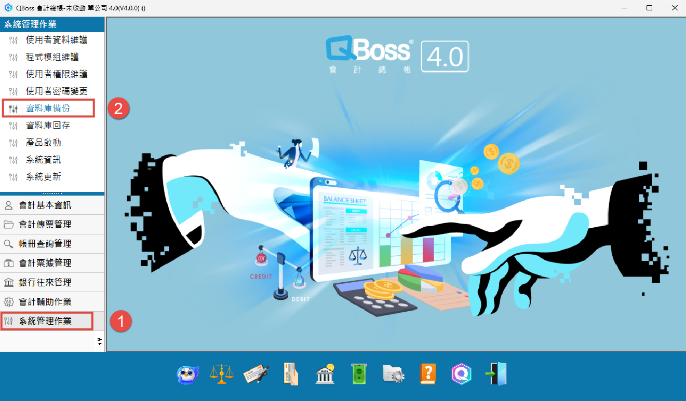
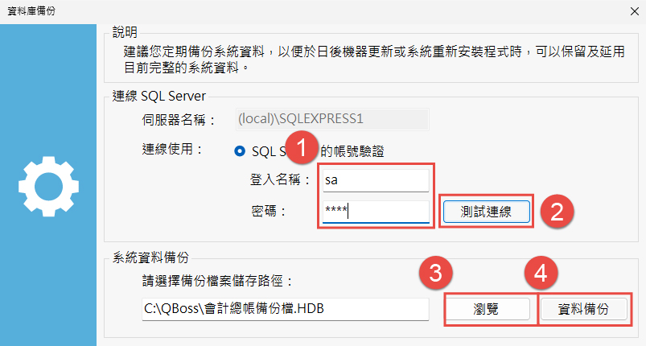
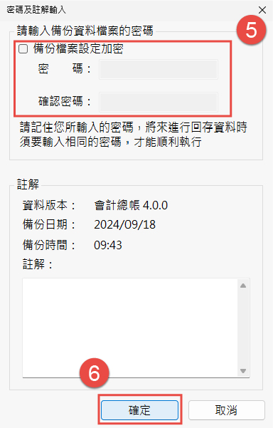

更換電腦 / 備份作業
備份流程說明
當您想要更換電腦或是系統重新安裝前，請您務必進行資料備份。
備份檔可完整的保留您的重要資料並將您的資料恢復到新的系統上。
STEP1
(1) 打開主程式，左側選單點開系統設定。
(2) 點選上方資料庫備份。

STEP2
(1) 輸入您資料庫的預設帳號sa，及您所設定的資料庫密碼。
(2) 點擊『測試連線』。
(3) 測試連線成功後，點擊『瀏覽』，來選擇備份檔要儲存的路徑位置。
(4) 點擊『備份』，將出現「密碼及註解」設定視窗。

(5) 若資料需加密，請輸入密碼，回存資料時需填入此密碼，若資料不需加密，請將『備份檔案設定加密』勾勾拿掉。
(6) 點擊『確定』後，即可完成資料備份。
